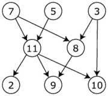

A ordenação topológica (em inglês, topological sort) é uma ordenação linear de um dag (direct acyclic graph, i.e., grafo orientado sem ciclos) onde cada nó não aparece antes dos seus antecessores.
Um exemplo: seja o seguinte dag (ref)

neste caso, existem várias ordenações topológicas possíveis:
É possível que, num dado problema, exista um critério extra que admite apenas uma ordenação.
Por exemplo, se exigirmos que nós com identificadores menores sejam ordenados primeiro, existe apenas uma solução:
Para devolver uma ordenação topológica genérica (i.e., sem critérios extra) devemos repetir o processo seguinte:
Enquanto houver nós:
A complexidade é dada por O(V+E) sendo V o número de nós e E o número de arestas.
Vamos implementar este algoritmo usando os serviços da classe GraphMatrix discutida nos tutoriais anteriores.
Primeiro a função auxiliar seguinte permite encontrar e isolar um nó sem antecessores.
Aqui assumimos que o grafo é sempre um dag:
private boolean[] deactivated; // vector useful for topSort
// get the index of a node with no in-edges (for topSort)
// returns -1 if no such node found (ie, a cycle exists)
private int getOutNode() {
int i;
boolean foundIn=true;
for(i=0; i<size && foundIn; i++) {
if (deactivated[i])
continue;
foundIn = false;
for(int j=0; j<size && !foundIn; j++)
foundIn = weight(j,i) != 0;
}
if(!foundIn) {
isolate(i-1);
deactivated[i-1] = true;
}
return !foundIn ? i-1 : -1; // if all have in-edges, there's a cycle
}
Com este método auxiliar torna-se mais fácil implementar o algoritmo acima.
Cada nó encontrado é colocado uma lista. No fim esta lista é traduzida para um array (que contém os índices dos nós na ordenação topológica).
/**
* Performs Topological Sort
* @requires a directed graph
* @complexity O(V + E)
* @return an array of indexes with one topological sort of the graph
* or null if the graph has cycles (ie, it is not a DAG)
*/
public int[] topSort() {
ArrayList<Integer> l = new ArrayList<Integer>();
int node, nodesLeft = size;
Graph cp = this.copy();
cp.deactivated = new boolean[size];
while(nodesLeft-- > 0) {
node = cp.getOutNode(); // find & deactivate node with no in-edges
if (node==-1)
return null;
l.add(node);
}
return list2array(l);
}
Podem experimentar este novo algoritmo (adicionem estes métodos à classe GraphMatrix) na resolução do problema UVa 200 Rare Order.
Outros problemas que podem ser abordados via ordenação topológica:
Uma outra utilidade da ordenação topológica é que serve para verificar se um dado grafo é um DAG, i.e., um Directed Acyclic Graph, um tipo particular de grafo muito usado em aplicações:
/**
* Checks if graph is a Direct Acyclic Graph
* @complexity O(V + E)
* @return true iff graph is DAG
*/
public boolean isDAG() {
return isDirected==DIRECT && topSort() != null;
}